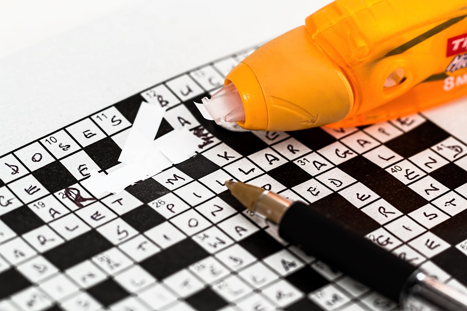

4 Great Brain Games
1.sudoko
Solving this game trains your mind to absorb several strategies and pieces of information in a short period. Therefore, playing sudoku forces your brain to concentrate so you can place all the numbers in order with no repetition. By doing so, this game stimulates your brain to think fast and makes you better in activities that require a lot of concentration and thinking.
You can play Sudoku online, on an app, or on paper. Look for a regular Sudoku in your newspaper, buy a book with a collection of puzzles, or download a free app for your phone or tablet.
Sudoku puzzles are available in varying degrees of difficulty. When you're starting out, play the easy games until you learn the rules. If you're playing on paper, use a pencil!
2.Crosswords
Crosswords are a classic brain trainer, accessing not only verbal language but memory from many dimensions of knowledge. There are many ways to do crossword puzzles, both online and off. If you receive a daily newspaper, you'll almost always get a crossword there. Or pick up a book of crosswords specifically suited to your skill level and interests.
You will also find many options for crossword puzzles online or via free or inexpensive apps.
3.Jigsaw Puzzles
Jigsaw puzzles are excellent for enabling you to engage your short-term memory. Your mind has to concentrate in order to sort out the different colours that form a picture. The more pieces there are, the more your brain has to work. Hence forcing it to think harder than it normally does. Solving jigsaw puzzles every day can help you improve your concentration a lot.
You will also find many options for crossword puzzles online or via free or inexpensive apps.
4.Chess
If you are looking for a game that will force you to think critically and logically, then chess is what you need. Playing chess forces you to think about using your entire brain (both sides). This can help you significantly in boosting your concentration. This game challenges you to be creative to solve problems. So, you have to concentrate a lot to do that well enough to win.
You will also find many options for crossword puzzles online or via free or inexpensive apps.